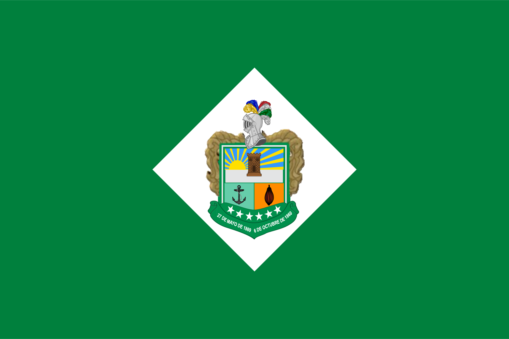
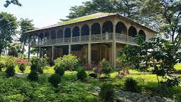
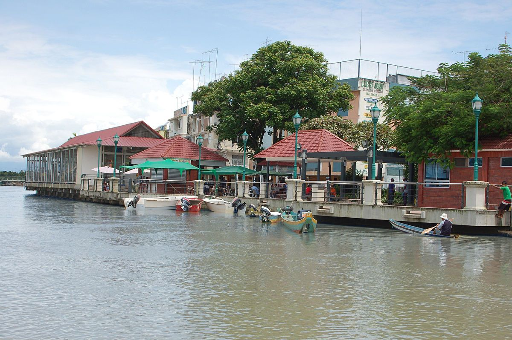
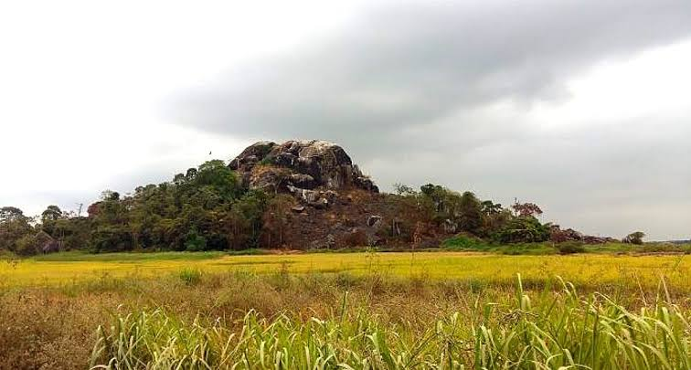
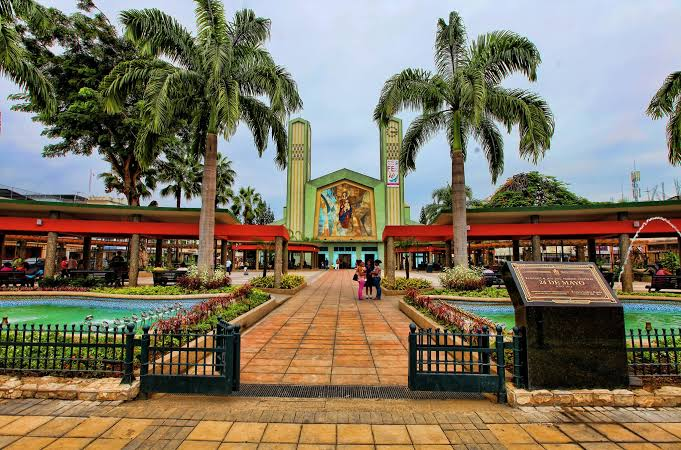
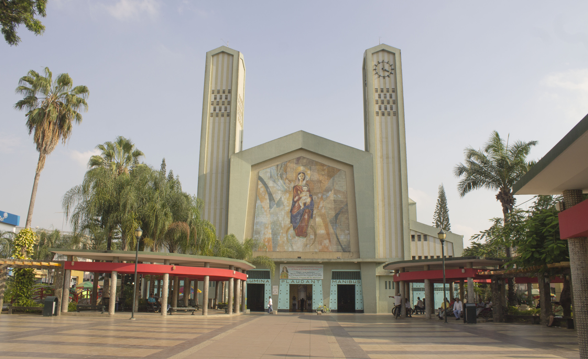
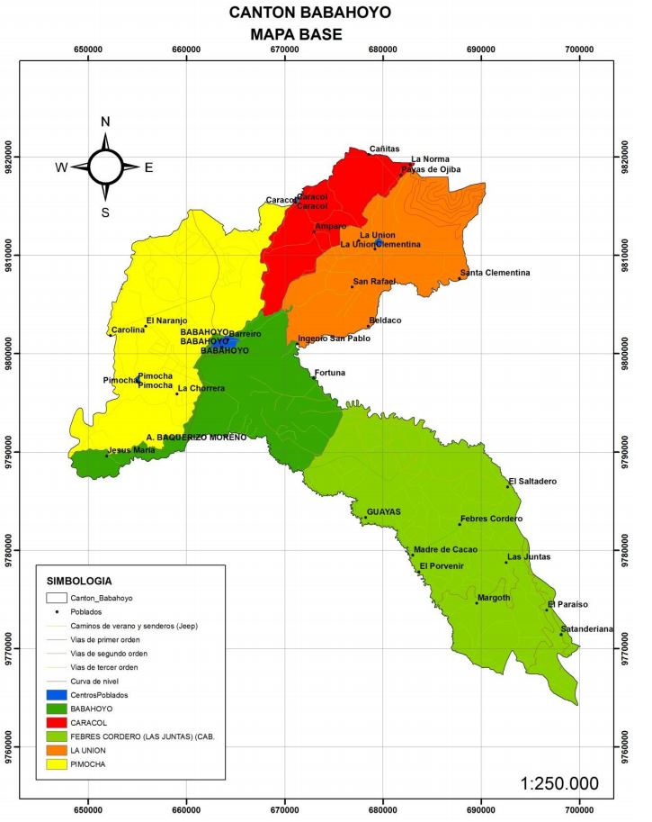

Babahoyo es un cantón ubicado en la provincia de Los Ríos, Ecuador. Es conocido por su actividad comercial, agrícola y por su importancia administrativa. La ciudad de Babahoyo es la capital del cantón y también de la provincia de Los Ríos. Se encuentra a orillas del río Babahoyo, formado por la unión de los ríos Catarama y San Pablo. Antiguamente, durante la época colonial, fue conocido como Bodegas de Babahoyo, porque allí funcionaban la Aduana y los almacenes reales que facilitaban el comercio entre Guayaquil y las ciudades de la Sierra. Además, conserva una importante riqueza histórica y cultural, con tradiciones montubias que forman parte de la identidad de sus habitantes. Su economía se basa principalmente en la agricultura, especialmente en los cultivos de arroz y banano, así como en el comercio.

El cantón Babahoyo está conformado por cuatro parroquias urbanas y cuatro parroquias rurales:
La gastronomía del cantón Babahoyo se caracteriza por sus preparaciones a base de pescado de río, plátano
verde y productos agrícolas de la zona. Entre sus platos típicos se encuentran:
Casa de Olmedo
Es turística por su importancia histórica y cultural, relacionada con José Joaquín de Olmedo y el Tratado de La Virginia.

Malecón 9 de Octubre
Es turístico porque permite disfrutar del paisaje del río Babahoyo, caminar y descansar.

Playita El Salto
Es turística porque ofrece espacios de recreación junto al río y es escenario de celebraciones populares.

Cerro Cacharí
Es turístico por sus formaciones rocosas, leyendas y belleza natural.

Parque 24 de Mayo
Es visitado porque ofrece un espacio para descansar, pasear y compartir en familia.

Catedral Nuestra Señora de la Merced
Es turística por su arquitectura religiosa, sus mosaicos y su importancia cultural.

El actual alcalde del cantón Babahoyo es el ingeniero Gustavo Barquet Marún, elegido por votación popular para el período 2023-2027. Es el responsable de dirigir la administración municipal y promover obras y proyectos para el desarrollo del cantón.
Según el Censo de Población y Vivienda de 2022 del INEC, el cantón Babahoyo cuenta con 178.509 habitantes, de los cuales 87.115 son hombres y 91.394 son mujeres.

Volver al índice principal